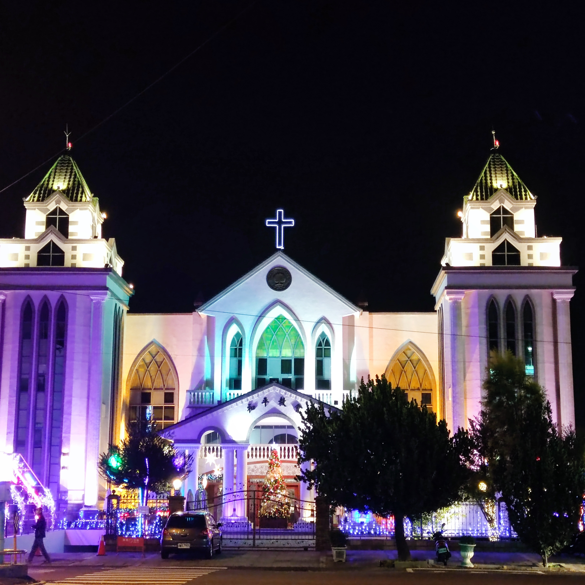
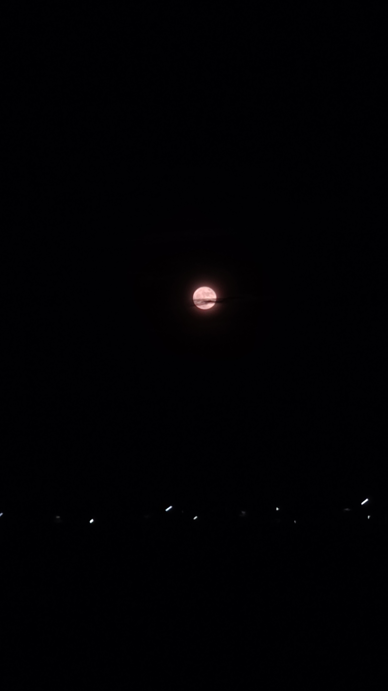
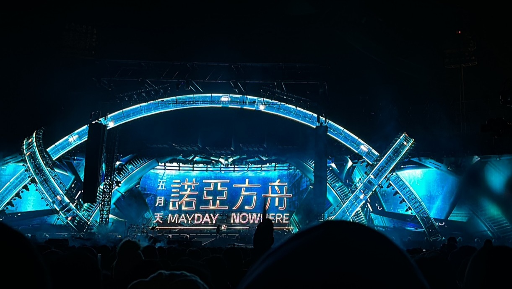

Pingtung Peace Church
 照片來源:張恩佑
和平教會於1952年成立，是一間熱情活潑、更新突破、關切人的生命、渴望祝福這世界的教會。 第三任主任牧師－葛順天牧師於和平教會牧會超過三十年(1981-2012)，在期間帶領教會領受聖靈的洗禮與更新，轉型成為「小組化」的教會。爾後，葛兆昕牧師接任教育牧師，父子二人同心建造教會，注重會友靈命的造就與信仰的傳承，積極興起下一個世代。
The Moonlight
 照片來源:張恩佑
月光是夜晚的一抹柔和光芒，散發著神秘而迷人的氛圍。它把黑暗中的世界撫慰成一幅寂靜而寧靜的畫面。月光灑在大地上，投射出溫柔的銀色光輝，照亮了夜行者的道路。它也啟發了無數詩人、藝術家和夢想家，激發著他們的創作靈感。月光象徵著希望、浪漫和神秘，成為了人們心中的一種美麗情愫。在月光的照耀下，我們沉浸在它獨特的氛圍中，感受到宇宙的寧靜和無限的可能性。
The Christmas!
 照片來源:張恩佑
照片來源:張恩佑
在高鐵站等候時，我眼前出現了一個裝飾著聖誕老人造型的人偶，這令我感到非常開心。那個人偶穿著紅白色的服裝，頭戴著白色的鬍子和紅色的帽子，散發出濃厚的聖誕節氛圍。我忍不住露出了燦爛的笑容，這個突如其來的驚喜增添了我對即將到來的聖誕節的期待。
The MAYDAY!
 照片來源:張恩佑
第一次去五月天演唱會，心情非常開心！他們的音樂讓我沉浸其中，而他們之間的團隊互動更是令人驚艷。他們彼此間的默契和配合，帶給觀眾無比的愉悅。除了精彩的演唱，他們的幽默互動也讓現場氣氛更加熱烈。這次經歷讓我更加欣賞五月天，並期待下一次的演唱會。